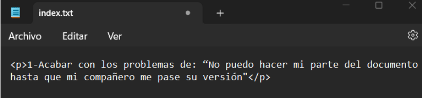
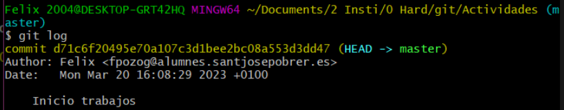
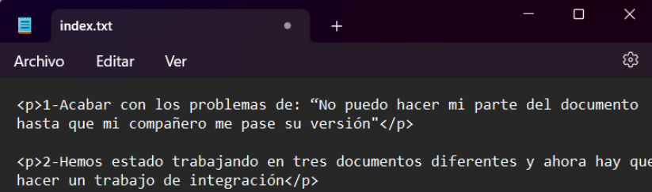
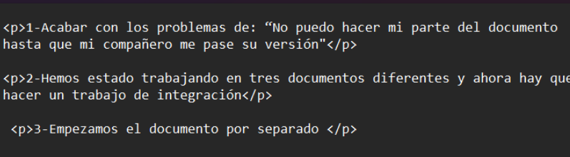

Tema 8: Desarrollo colaborativo
1- Crear carpeta "Actividades". Crear en ella el documento : Index.txt , que incluye la siguiente frase:
1-Acabar con los problemas de: “No puedo hacer mi parte del documento hasta que mi compañero me pase su versión
2- Comprobamos efecto del commit:
3.a- Escribir el comando:$git status
b-¿Qué archivo esta "siguiendo" GIT?
Está siguiendo el archivo de index.txt
4- Añadir las siguiente frase al Index.txt y GUARDAR dicho archivo:
2-Hemos estado trabajando en tres documentos diferentes y ahora hay que hacer un trabajo de integración
5.a- Escribir el comando: $git status
b-¿Git se ha dado cuenta del cambio?
Si se ha dado cuenta del cambio
6.a- Añadir las sigiente frase al Index.txt y guardar:
b- Ejecutar la instrucción : $ git add
3-Empezamos el documento por separado
